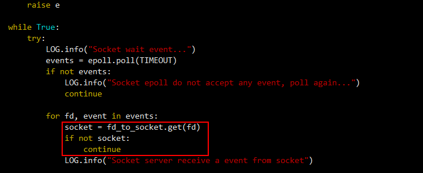

现象描述
OceanProtect界面上提示任务一定时间内进度未更新或错误详情包含“执行业务子任务失败”。当提示“执行业务子任务失败”时，单击“查看详情”，详情信息中包含Error doing sync read from disk或Failed during data mover。客户端的虚拟化插件日志里与socket相关的日志会打印错误码11（Resource temporarily unavailable），并且三次重试后仍备份或恢复失败。
可能原因
FusionCompute 8.3.0之前版本会存在多个socket并发执行，将socket存放在map里，循环查找socket的方式使用了[]而不是get，当某个socket找不到时会报错，导致主线程循环报这个错，卡住正常socket的读写。
处理步骤
- 登录FusionCompute生产环境CNA主机。
- 执行su - root命令，切换到root用户。
- 执行以下命令，按照下图红框中的内容修改查找socket的方式。
vim /usr/lib/pythonX.X/site-packages/vna/storage/utils/socket_server.py

- 命令中的pythonX.X请根据实例的python版本替换。
- 当系统中同时安装了多个版本的python时，请查找出存在/site-packages/vna/storage/utils/socket_server.py路径的python版本，再执行此命令。
将以下内容修改至下图红框位置： 修改内容中的缩进请使用空格进行缩进，请勿使用Tab键，否则会导致修改失败。
socket = fd_to_socket.get(fd) if not socket: continue